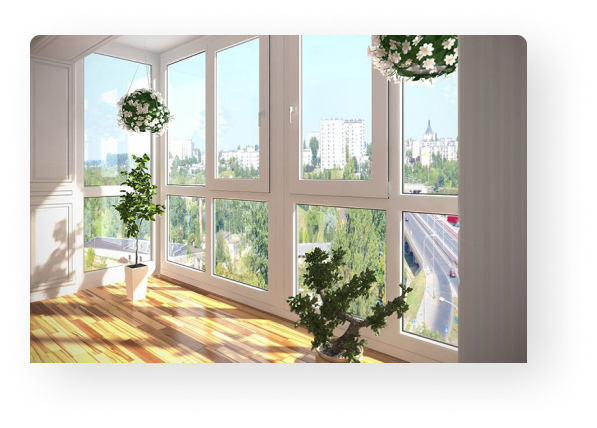
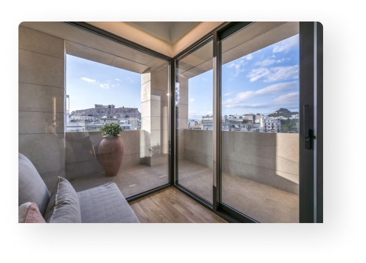

<section class="section_format">
    <div class="container">
        <h3 class="format_title">Выбери свой формат</h3>
        <div class="format_wraper">
            <div class="container_format">
                <div class="format__images">
                    
                </div>
                <div class="format__content">
                    <h3 class="format__title">Пластиковые окна</h3>
                    <p class="format__text">
                        Экологичные и долговечные. Срок использования такого вида окон достигает 40-50 лет. Они не
                        подвержены воздействию внешней среды, сохраняя свою форму с первого дня эксплуатации. Также ПВХ
                        изделия никак не вредят ни членам семьи, ни окружающей среде.
                    </p>
                    <a href="../../plastic_windows.html" class="format__btn btn_primary">Подробнее</a>
                </div>
            </div>
            <div class="container_format">
                <div class="format__images">
                    
                </div>
                <div class="format__content">
                    <h3 class="format__title">Алюминиевые окна</h3>
                    <p class="format__text">
                        Теплые и безопасные. Помимо того, что такие окна не боятся резкого перепада температур на улице, сохраняя естественную атмосферу в доме в любую погоду, они гарантируют безопасность. Алюминиевый профиль пожаробезопасен, а также не выделяет никаких токсичных веществ при нагревании.
                    </p>
                    <a href="../../allum_windows.html" class="format__btn btn_primary">Подробнее</a>
                </div>
            </div>
        </div>
    </div>
</section>